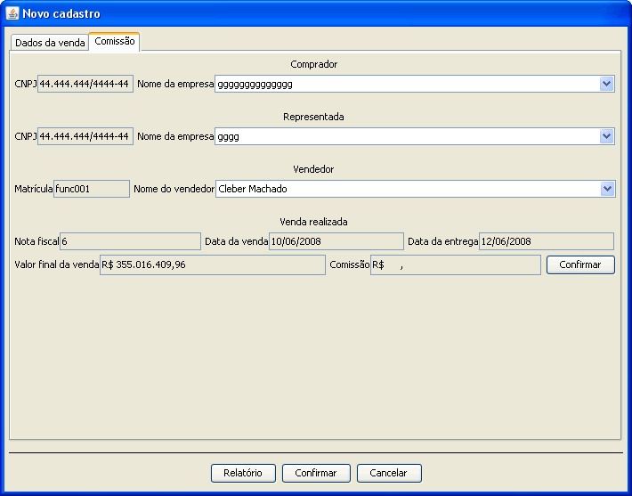

O cadastro de vendas inicia-se com a seleção da empresa cliente, empresa representada e vend
O cadastro de venda possui alguns dados essênciais a falta de algum deles impedirá o cadastro da venda realizada.

Após cadastrada a venda ou abrindo uma venda ja cadastrada se o usuário logado atualmente possui direitos administrativos sobre o sistema terá acesso a guia comissão onde é possível cadastrar a comissão ao vendedor sobre a venda realizada.